Generated by scripts/compare_meta_to_benchmark.py.
| run | run_dir | manual_meta | aggregate_rows | |
|---|---|---|---|---|
| 0 | v3-allstudies | /home/zorro/repos/autonima-results/projects/social/v3-allstudies | False | all_analyses, all_studies, all_abstract |
No rows.
| manual_name | auto_name | manual_exists | run::v3-allstudies | |
|---|---|---|---|---|
| 0 | affiliation_merged | affiliation_attachment | True | True |
| 1 | self_merged | perception_self | True | True |
| 2 | others_merged | perception_others | True | True |
| 3 | soccomm_merged | social_communication | True | True |
| 4 | all_merged | social_processing_all | True | True |
Counts are computed from each run's nimads_annotation.json and PMID-linked through nimads_studyset.json. Includes mapped annotations and all* annotations.
| run | manual_name | auto_name | n_analyses | n_unique_pmids | is_mapped | |
|---|---|---|---|---|---|---|
| 0 | v3-allstudies | affiliation_merged | affiliation_attachment | 162 | 56 | True |
| 1 | v3-allstudies | self_merged | perception_self | 152 | 49 | True |
| 2 | v3-allstudies | others_merged | perception_others | 587 | 164 | True |
| 3 | v3-allstudies | soccomm_merged | social_communication | 385 | 104 | True |
| 4 | v3-allstudies | all_merged | social_processing_all | 705 | 177 | True |
| 5 | v3-allstudies | all_abstract | 1005 | 212 | False | |
| 6 | v3-allstudies | all_analyses | 989 | 202 | False | |
| 7 | v3-allstudies | all_studies | 1060 | 247 | False |
| run | v3-allstudies |
|---|---|
| auto_name | |
| affiliation_attachment | 162 |
| perception_self | 152 |
| perception_others | 587 |
| social_communication | 385 |
| social_processing_all | 705 |
| all_abstract | 1005 |
| all_analyses | 989 |
| all_studies | 1060 |
| run | v3-allstudies |
|---|---|
| auto_name | |
| affiliation_attachment | 56 |
| perception_self | 49 |
| perception_others | 164 |
| social_communication | 104 |
| social_processing_all | 177 |
| all_abstract | 212 |
| all_analyses | 202 |
| all_studies | 247 |
| project | annotation | n_analyses | n_unique_pmids | is_dataset_total | annotation_path | studyset_path | |
|---|---|---|---|---|---|---|---|
| 0 | social | affiliation_merged | 106 | 34 | False | /home/zorro/repos/neurometabench/data/nimads/social/merged/nimads_annotation.json | /home/zorro/repos/neurometabench/data/nimads/social/merged/nimads_studyset.json |
| 1 | social | all_merged | 856 | 238 | False | /home/zorro/repos/neurometabench/data/nimads/social/merged/nimads_annotation.json | /home/zorro/repos/neurometabench/data/nimads/social/merged/nimads_studyset.json |
| 2 | social | others_merged | 407 | 123 | False | /home/zorro/repos/neurometabench/data/nimads/social/merged/nimads_annotation.json | /home/zorro/repos/neurometabench/data/nimads/social/merged/nimads_studyset.json |
| 3 | social | self_merged | 206 | 65 | False | /home/zorro/repos/neurometabench/data/nimads/social/merged/nimads_annotation.json | /home/zorro/repos/neurometabench/data/nimads/social/merged/nimads_studyset.json |
| 4 | social | soccomm_merged | 381 | 101 | False | /home/zorro/repos/neurometabench/data/nimads/social/merged/nimads_annotation.json | /home/zorro/repos/neurometabench/data/nimads/social/merged/nimads_studyset.json |
| 5 | social | __dataset_total__ | 856 | 238 | True | /home/zorro/repos/neurometabench/data/nimads/social/merged/nimads_annotation.json | /home/zorro/repos/neurometabench/data/nimads/social/merged/nimads_studyset.json |
| n_rows | n_cols | dice_mean_full | dice_mean_diagonal | pearson_mean_full | pearson_mean_diagonal | |
|---|---|---|---|---|---|---|
| run | ||||||
| v3-allstudies | 8 | 5 | 0.505 | 0.578 | 0.722 | 0.778 |
| run | v3-allstudies |
|---|---|
| auto_name | |
| affiliation_attachment | 0.423 |
| perception_self | 0.481 |
| perception_others | 0.665 |
| social_communication | 0.587 |
| social_processing_all | 0.734 |
| run | v3-allstudies |
|---|---|
| auto_name | |
| affiliation_attachment | 0.646 |
| perception_self | 0.708 |
| perception_others | 0.855 |
| social_communication | 0.790 |
| social_processing_all | 0.891 |
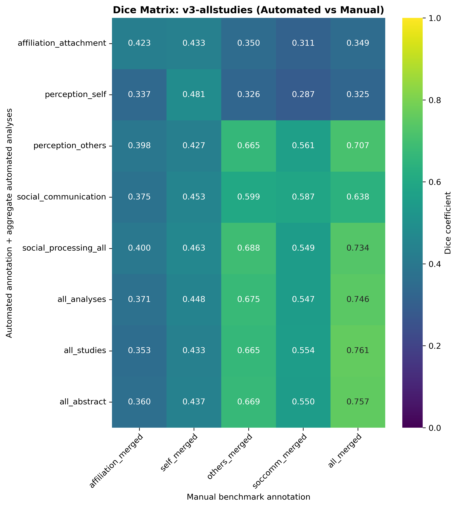
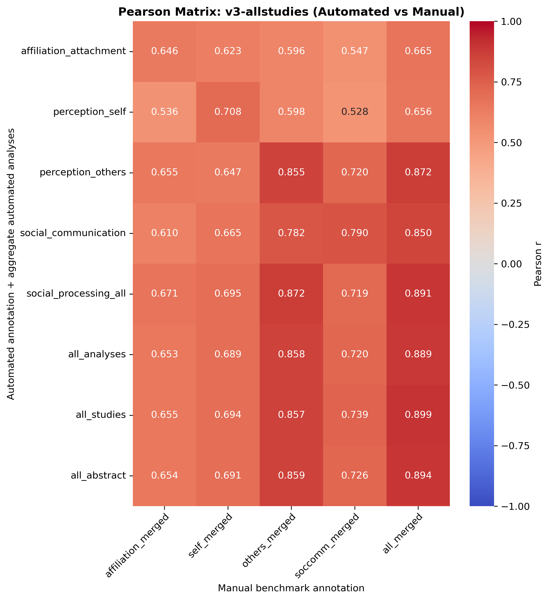
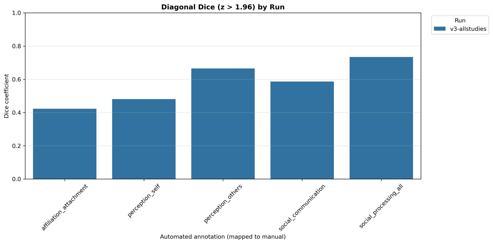
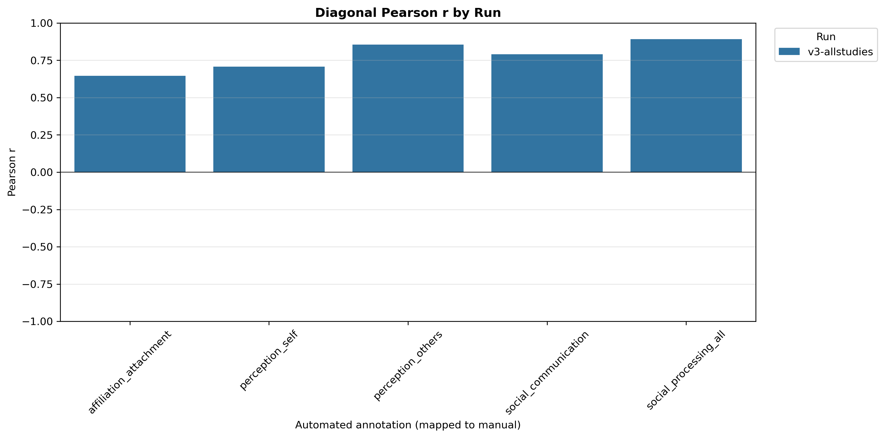
Ordered as manual benchmark first, then each automated run. Includes only all_analyses and mapped custom annotations.
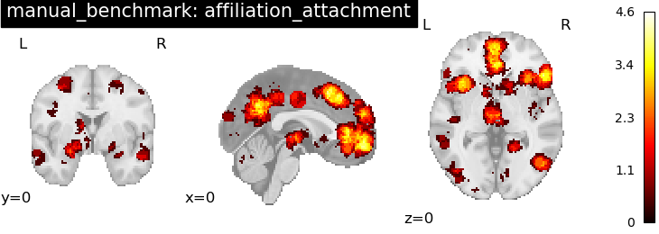
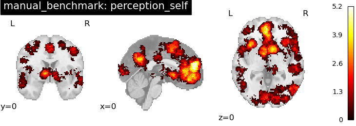
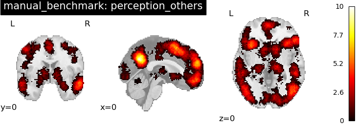
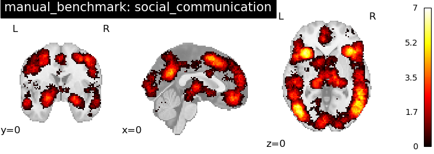
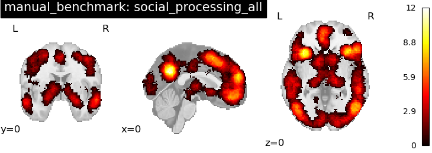
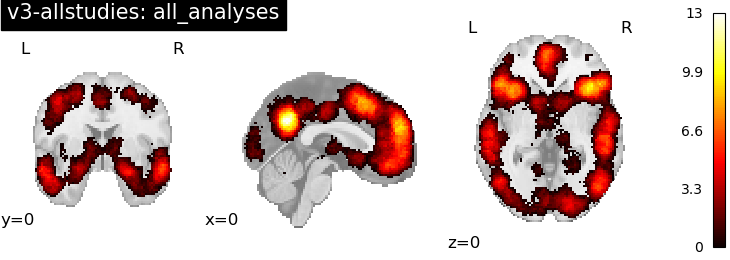
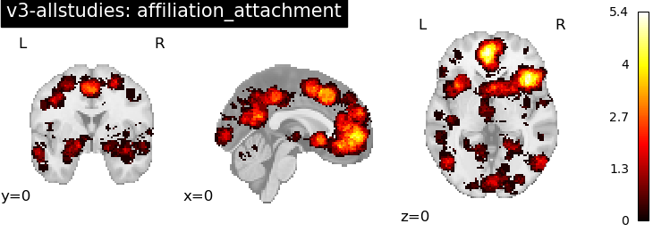
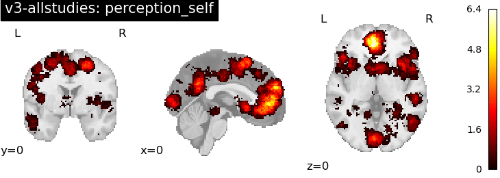
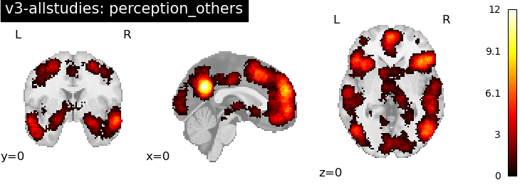
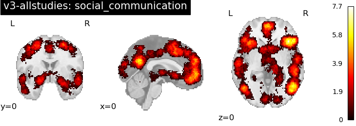
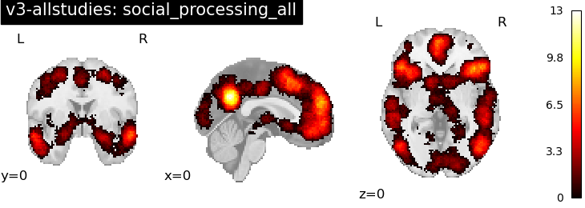